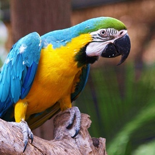
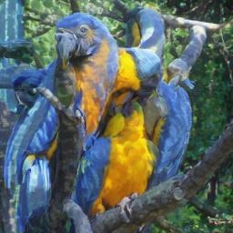
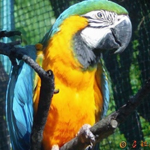
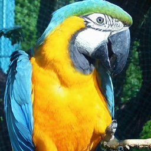
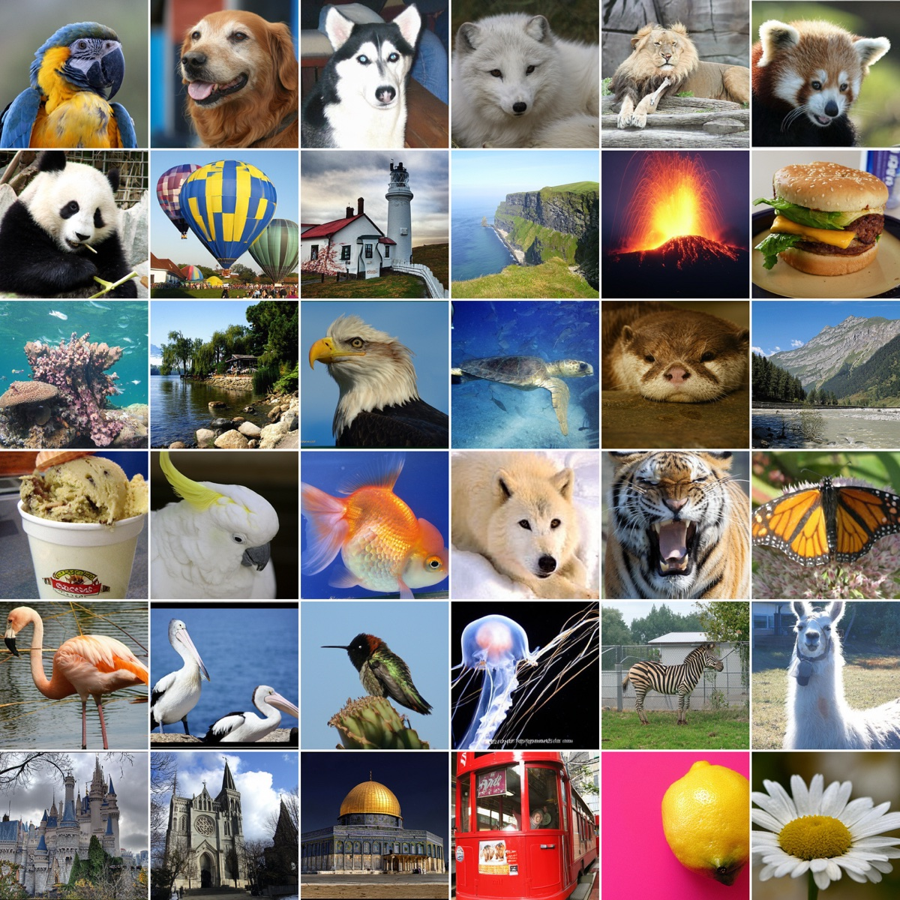

More layers: sharper pixels, worse samples
A Representation Autoencoder diffuses in the features of a frozen vision encoder such as DINOv3, with a pixel decoder trained on top. Averaging more encoder layers into the latent adds fine detail. Reconstruction gets much sharper. Generation gets worse.
The usual reading blames information: a detailed latent is harder to diffuse. We hold the information fixed and find the cause in the geometry of the interface between the frozen encoder and its decoder.
Same information, different geometry
A diffusion model treats every latent direction alike. The decoder does not: along some directions a small error ruins the image, along others it hardly shows.
The error is large where the decoder is sensitive.




- decoder tolerance
- DiT samples
- visible error
- sensitive
- insensitive
pixel error ≈ tr( )
Hover over a termTap a term
Pixel error is decoder sensitivity times DiT error, added up over latent directions. With the latent untouched, there are two ways to shrink it: FuseReg makes the decoder less sensitive, and FuseLift moves the DiT’s error away from the sensitive directions.
FuseReg: widen what the decoder tolerates
A full-fusion decoder only ever sees one input per image: the exact average of all 23 layers. FuseReg trains it on the average of a random subset of layers and asks for the same image every time. At test time nothing changes: same encoder, same latent, same diffusion target.
Training: average a random subset of layers.
Keep 50,000 sampled latents fixed and swap only the decoder: unguided gFID drops from 3.01 to 2.21. With guidance, both decoders converge to 1.25. The errors that remain are spread over every channel, beyond the directions in which layers disagree, and need a different tool.
FuseLift: diffuse where the decoder measures
Freeze the decoder and move the diffusion model instead. The decoder begins with a linear projection of the latent. FuseLift trains the DiT on the output of that projection, h0, instead of the encoder latent z.
In encoder space, every direction gets the same noise and the same weight.
h0 is an invertible affine map of z, so every reconstruction, the decoder weights and the DiT recipe stay the same. Only the ruler changes: the directions the decoder reads most strongly are stretched, so the DiT spends its capacity where pixels are at stake.
One linear step is the right depth. Diffusing deeper, after nonlinear decoder blocks, generates worse.
Results
Class-conditional ImageNet-256 with DiT-XL: 80 epochs, 50 sampling steps, 50,000 samples. Guided runs use internal guidance at scale 1.78.
Moving the target closes the guided gap
Same decoder, same reconstructions. Only the space the DiT diffuses in differs.
Guided gFID during training lower is better
Against prior methods
Lowest gFID and lowest FDr6, the Fréchet distance in the features of six different networks, averaged, with the same 80-epoch budget and frozen decoders as RAEv2.
Each tool has its regime
Without guidance, errors are large and decoder tolerance decides: FuseReg wins. With guidance, errors are small but spread over every channel, and the metric decides: FuseLift wins. Together they beat the baseline in both regimes.

FuseLift samples from the 7-layer model at 0.984 gFID.
Reproduce 0.984 gFID
Everything needed to reproduce these numbers is in the repository. Checkpoints, decoders, the 50,000 samples and the FID reference statistics are on Hugging Face. FuseReg decoders are in the FuseReg repository.
Cite
@misc{du2026rethinkingreconstructiongenerationgaprepresentation,
title={Rethinking the Reconstruction-Generation Gap in
Representation Autoencoders},
author={Hongyang Du and Yunfei Xie and Junjie Ye and Jiawei Yang and
Xiaoyan Cong and Haodong Zhang and Yongchao Huang and
Haiyu Wu and Zongxia Li and Shihang Gui and Dawei Liu and
Runhao Li and Jingcheng Ni and Chen Wei and
Randall Balestriero and Yue Wang},
year={2026},
eprint={2609.31620},
archivePrefix={arXiv},
primaryClass={cs.CV},
url={https://arxiv.org/abs/2609.31620},
}